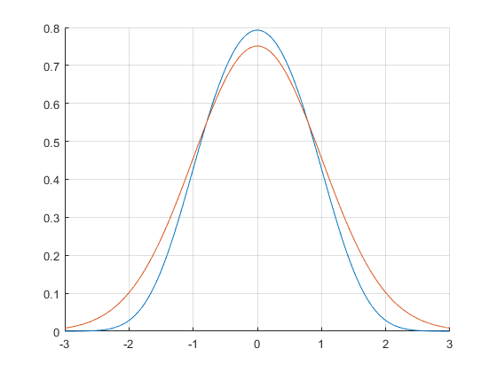

Contents
clear;
clf;
y_min = -3;
initialValue1 = 0;
initialValue2 = 10^-50;
hLogLower = -4;
hLogUpper = -4;
hIndex = 0;
iter=0;
maxIter = 10000;
ElowerInit = 1;
EupperInit = 1.2;
eigError = 10^-12;
for h = logspace(hLogLower, hLogUpper, (hLogUpper-hLogLower +1))
Elower = ElowerInit;
Eupper = EupperInit;
E = (Eupper+Elower)/2;
iter = 0;
while 1
N = -ceil(y_min/h);
j = linspace(-N, 1, N+2);
y = j*h;
j_full = linspace(-N, N, 2*N+1);
y_full = j_full*h;
normCalc = 0;
psiExact = PsiExact(y_full, 1);
probExact = ProbExact(y_full,1);
v = Quart_Pot(y);
psiCalc = zeros(1,N);
psiCalc(1) = initialValue1;
psiCalc(2) = initialValue2;
for n = 2:N+1
psiCalc(n+1) = ((24+10*h^2*v(n)-10*h^2*E)*psiCalc(n)+(-12+h^2*v(n-1)-E*h^2)*psiCalc(n-1))/(E*h^2+12-h^2*v(n+1));
end
psiCalcFlip = flip(psiCalc);
psiCalcFlip = psiCalcFlip(4:end);
psiCalcFull = [psiCalc, psiCalcFlip];
probCalc = psiCalcFull.^2;
normCalc = h*sum(probCalc);
normExact = h*sum(probExact);
psiCalc = psiCalc/sqrt(normCalc);
psiFinal = psiCalcFull/sqrt(normCalc);
Now error analysis
iter = 1+iter;
if(iter>maxIter)
disp("Convergence Failed");
break;
end
if(eigError)>abs(psiCalc(end)-psiCalc(end-2))
disp("Solved!");
break;
elseif psiCalc(end)>psiCalc(end-2)
disp("Elow, psiHigh!");
Elower = E;
E = (Eupper+Elower)/2;
elseif psiCalc(end)<psiCalc(end-2)
disp("Ehigh, psiLow!");
Eupper = E;
E = (Eupper+Elower)/2;
end
Ehigh, psiLow!
Elow, psiHigh!
Ehigh, psiLow!
Ehigh, psiLow!
Elow, psiHigh!
Elow, psiHigh!
Ehigh, psiLow!
Elow, psiHigh!
Ehigh, psiLow!
Elow, psiHigh!
Ehigh, psiLow!
Ehigh, psiLow!
Ehigh, psiLow!
Ehigh, psiLow!
Elow, psiHigh!
Elow, psiHigh!
Ehigh, psiLow!
Elow, psiHigh!
Elow, psiHigh!
Elow, psiHigh!
Solved!

end
figure(1);
hold on;
plot(y_full , psiFinal)
plot(y_full, psiExact);
hIndex = hIndex+1;
wError(hIndex) = 1/N*sum(abs(psiFinal-psiExact));
end
grid on;